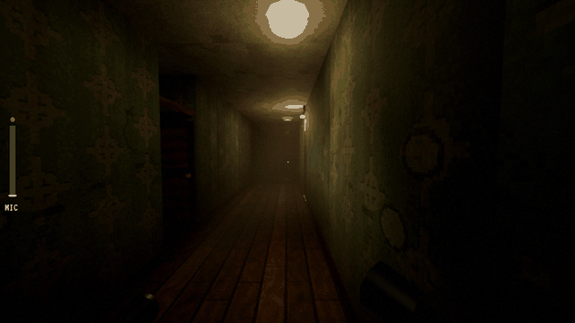
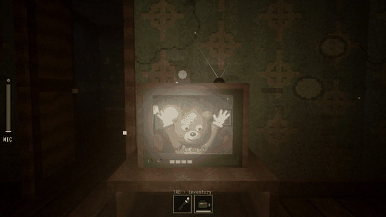

⚠ ALPHA BUILD. This is an early version of the game and it will keep getting updates: new content, fixes and improvements. Expect bugs, and tell me about them in the comments!
On the night of October 14, 1989, Channel 9 stayed on the air past midnight. Nobody at the station remembers putting that tape in.
It was an episode of "I Can See You!", a children's show about a friendly mustard-colored bear who played hide-and-seek with the kids at home. He would wave, cover his eyes, count to ten, and say it with a smile: I can see you.
That night, he didn't cover his eyes.
By morning, Olmos Street was empty. The families left their beds unmade and the lights off. They left every TV on.
Now someone wants the tapes back. Every copy. The pay is good and nobody explains why. So you go in at night with a flashlight, a VHS camcorder running on borrowed batteries, and up to three friends you trust enough to walk behind you in the dark.
The house is quiet. The hallway is empty.
Until you raise the camera.
NOTICE
TO THE RESIDENTS OF OLMOS STREET:
TONIGHT THERE IS A VISITOR.
DO NOT LOOK FOR IT WITH YOUR EYES.
THE VISITOR DOES NOT LIKE PHOTOGRAPHS.
IF SOMEONE SINGS, DO NOT TURN YOUR BACK.
IF IT ASKS WHERE YOU ARE, DO NOT ANSWER.
GOOD NIGHT.
▶ THE NIGHT
- You're never alone in there. Online co-op for 1–4 players with proximity voice: voices fade with distance and get muffled behind walls. When someone screams two rooms away, you'll hear it. So will it.
- What the eye can't see. To the naked eye there's nothing at the end of the hall. Through the camcorder's viewfinder, something is standing there. It doesn't move while you film it, and every time you find it again, it's in a different pose. The battery doesn't last forever.
- The flash burns it away. For a while. It always comes back, from somewhere you aren't looking.
- Under the bed, inside the wardrobe. You can hide. It will check.
- It climbs onto the ceiling, crawls through boarded doorways, and comes faster when nobody is looking at it.
- A different house every night. And the TV that gives you the rules... might stop telling the truth.
- Be the Visitor. In this mode one of you plays the thing in the house. Hunt your friends, or practice against bots.
- The tape of your night. When it ends, an old TV plays back the night's best moments, with everyone's voices, in sync for the whole group. Your friend's scream, kept forever.

Find the tapes. Get back to the van before the batteries die. And if you hear a voice ask where you are, don't answer.
▶ CONTROLS
| WASD / Mouse | Move / look |
| Hold right click | Raise the camcorder |
| Left click | Flash |
| F | Flashlight |
| E | Use · hide · pick up |
| Shift / C | Run / crouch |
| R | Reload battery |
| Tab | Inventory |
| V | Push to talk (if enabled) |
▶ GOOD TO KNOW
- Alpha build, free, and still in development. It will keep being updated, and the game updates itself: when there's a new version, it asks you on startup. Found a bug or have an idea? Leave a comment.
- Windows 10/11 (64-bit). Languages: English and Spanish.
- Online play uses Epic Online Services (no Epic account needed). Microphone recommended.
- Streamers and YouTubers: go ahead, stream it and monetize your videos. Send me the link, I want to see it.
- Warning: flashing lights, loud sounds and screaming.
▶ ESPAÑOL
⚠ VERSIÓN ALFA. Es una versión temprana del juego y seguirá actualizándose con contenido nuevo, arreglos y mejoras. Puede tener errores: ¡cuéntamelos en los comentarios!
La noche del 14 de octubre de 1989, el Canal 9 siguió emitiendo pasada la medianoche. Nadie en la emisora recuerda haber puesto esa cinta.
Era un episodio de «¡Te estoy viendo!», un programa infantil sobre un osito color mostaza que jugaba al escondite con los niños de casa. Saludaba, se tapaba los ojos, contaba hasta diez y lo decía con una sonrisa: te estoy viendo.
Esa noche no se tapó los ojos.
Por la mañana, la calle Olmos estaba vacía. Las familias dejaron las camas sin hacer y las luces apagadas. Dejaron todas las teles encendidas.
Ahora alguien quiere recuperar las cintas. Todas las copias. Pagan bien y nadie explica por qué. Así que entras de noche con una linterna, una videocámara VHS con pilas prestadas y hasta tres amigos en los que confías lo bastante como para que caminen detrás de ti a oscuras.
La casa está en silencio. El pasillo está vacío.
Hasta que levantas la cámara.
- Nunca estás solo ahí dentro. Cooperativo online de 1 a 4 con voz por proximidad: si alguien grita dos habitaciones más allá, lo oirás. Y ella también.
- Lo que el ojo no ve. A simple vista no hay nada al fondo del pasillo. Por el visor de la videocámara, hay algo de pie. No se mueve mientras la grabas, y cada vez que la vuelves a encontrar está en otra postura. La batería no dura para siempre.
- El flash la quema. Un rato. Siempre vuelve, desde donde no estás mirando.
- Bajo la cama, dentro del armario. Puedes esconderte. Ella mirará.
- Sube por el techo, se arrastra por las puertas tapiadas y viene más rápido cuando nadie la mira.
- Una casa distinta cada noche, y una tele que da las reglas... que quizá deje de decir la verdad.
- Sé la Visita: en este modo uno de vosotros es lo que vive en la casa (también contra bots).
- La cinta de tu noche: al acabar, una tele vieja repite los mejores momentos, con las voces de todos. El grito de tu amigo, guardado para siempre.
- Alfa gratuita en desarrollo, se actualiza sola. Windows 10/11. Inglés y español.
- Streamers: podéis emitirlo y monetizar los vídeos. Aviso: luces intermitentes, sonidos fuertes y gritos.
Encuentra las cintas. Vuelve a la furgoneta antes de que se acaben las pilas. Y si una voz te pregunta dónde estás, no contestes.